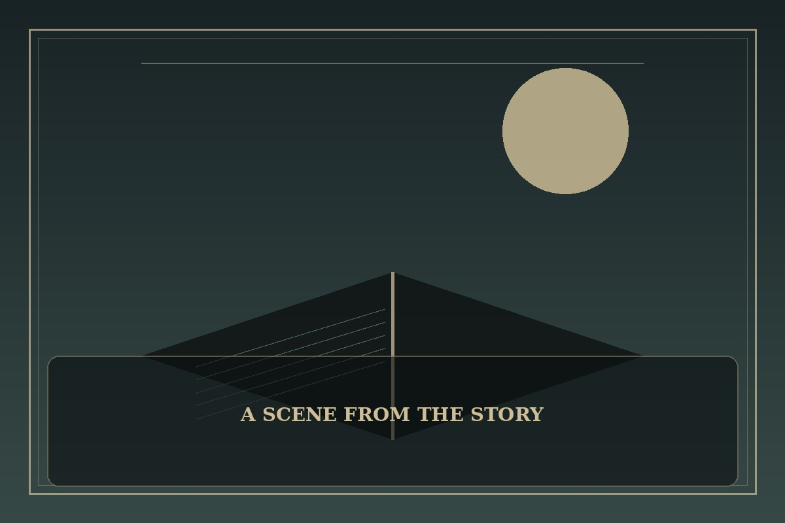

Omniscient Reader's Viewpoint
Synopsis
An ordinary reader finds that the world has begun following the rules of a story only he knows. When fiction turns into a deadly reality, knowledge becomes both his greatest weapon and his most dangerous burden.
Chapter 1: The Reader Who Stayed Until the End
The final page ended with a sentence that made no sense: Tomorrow, the story begins again. Jihan read it twice, laughed at the author’s strange ending, and shut his phone just as every screen in the train flashed white.
A voice announced that the world had entered a new scenario. People screamed as familiar streets changed around them, and a countdown appeared above the station doors. Jihan recognized the pattern from the novel he had read for years, but knowing the rules did not mean he understood how to survive them.
He took one breath, recalled the first choice the characters had faced, and stepped between a frightened child and the approaching danger. If this world truly followed a story, then every decision mattered—and he would have to write his own way forward.

This fan-made sample is an original piece created for a student website project; it is not an official chapter of Omniscient Reader's Viewpoint.